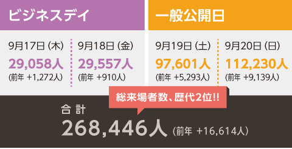
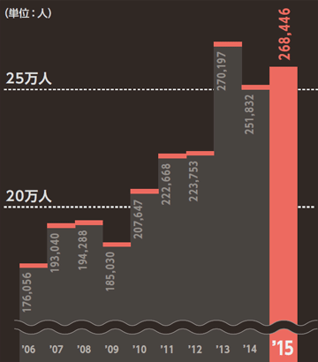
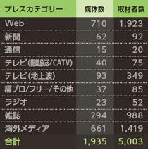
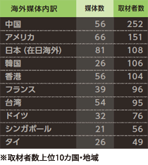

東京ゲームショウ 公式Facebookページ
東京ゲームショウ 公式twitterアカウントページ
東京ゲームショウ Linked In
English
ビジネスデイ
2016.9.15[THU]-16[FRI]
一般公開
2016.9.17[SAT]-18[SUN]
会場
幕張メッセ
東京ゲームショウ2016 出展のご案内
プレスの方へ
東京ゲームショウ2015の模様
東京ゲームショウ2016についてお問い合わせ
東京ゲームショウ2016 出展申込はこちら
開催概要
募集コーナー／出展料金
インディーゲームコーナー出展募集について
広告スポンサーメニュー
出展以外のサービス
出展にあたって／出展申込フォーム
センス・オブ・ワンダーナイト応募について
出展資料ダウンロード
前回の開催結果
前回の開催結果
TOPページ
出展のご案内
前回の開催結果
出展社数
480社／国内234社・海外246社（前年 421社／国内219社・海外202社）
総出展小間数
2,009小間（前年 1,715小間）
出展タイトル数
1,283タイトル（前年 1,363タイトル）
来場者数

来場者数の推移

プレス来場内訳

海外メディア内訳

ご出展のお申し込み・お問い合わせは
日経BP社 東京ゲームショウ事務局
〒108-8646 東京都港区白金1-17-3 TEL：03-6811-8082 FAX：03-5421-9172 E-mail：
tgs@nikkeibp.co.jp
©2002-2016 CESA/Nikkei Business Publications, Inc. All rights reserved
このページのトップへ